In this chapter, we learn how to describe the relationship between an ecological response and a predictor with a deterministic function, and how to find out the shape of such a function from its formula. To work with a function we need to know where it starts and where it ends, how steep it is, where it peaks or bends, and what each of its parameters does to the curve. We answer these questions with limits and derivatives, and we check the answers with R.
This chapter differs from the previous ones in that it contains no random variables and no data analysis. Chapter 2, Chapter 3 and Chapter 4 built the first pillar of the book, probability and likelihood, for samples in which every observation had the same distribution. However, ecological questions are usually about how a response changes with a predictor, so that the distribution of an observation depends on the conditions under which it was made. This chapter builds the second pillar, the functions that describe that change. The two come together in Chapter 6, where a parameter of a distribution (usually its mean) follows one of these deterministic functions and the parameters of the deterministic function are estimated by maximum likelihood. To fit such a model we first need to know the candidate curves, what their parameters mean and which starting values to give to the optimiser. That is why this chapter comes now, and why it is mostly pen and paper.
This chapter analyses two functions in full, the Michaelis–Menten function and the Ricker function. It also uses two data sets from the predation experiments with reed frog tadpoles of Vonesh and Bolker (2005).1 The practical of Chapter 4 analysed the survival of tadpoles in one of those experiments; here we use two others, in which the number of tadpoles killed was recorded for different densities and for different body lengths of the tadpoles. The data are only a backdrop for the functions. The parameter values of every curve in this chapter were eyeballed, since how to estimate them from the data is the topic of Chapter 6.
This chapter makes use of calculus and the analysis of functions. If the rules for exponents, logarithms, limits and derivatives are no longer familiar, work through the calculus refresher first.
2 Learning goals
In this chapter, we will cover:
deterministic functions, their domain, range, parameters and units;
phenomenological and mechanistic functions;
how to write and plot functions in R, including functions of two inputs;
limits and asymptotes;
derivatives, slopes and curvature;
maxima, inflection points, half-maxima and characteristic scales;
the meaning of parameters, reparameterisation and derivatives with respect to parameters;
how to build new functions by shifting, scaling, composing and generalising;
how to choose a function and read starting values for its parameters from a plot.
We will use the Michaelis–Menten and Ricker functions throughout the chapter. Many other functions are described in the Supplement, which you will need for the practical. The rules of calculus that the chapter relies on are in the calculus refresher.
3 Deterministic functions
A deterministic function assigns exactly one output to each input, for given values of its parameters: the same input always gives the same output. We write \(y=f(x)\), where \(x\) is the input, \(y\) is the output and \(f\) is the rule that turns one into the other. The parameters of the function are the constants in that rule. They stay fixed while \(x\) varies, and changing them changes the curve. The domain of the function is the set of values of \(x\) for which we use it, and its range is the set of values that \(y\) can take.
Let’s illustrate these concepts with the reed frog experiments. In the first one, tanks were stocked with different numbers of tadpoles (from 5 to 100) and with three dragonfly larvae, and the number of tadpoles killed was counted after 14 days. In the second one, each tank received 10 tadpoles of a given body length (from 9 to 37 mm) and the number killed was counted after 3 days. In R:
# Load the two reed frog experiments of the package emdbookdata(ReedfrogFuncresp, package ="emdbook")data(ReedfrogSizepred, package ="emdbook")# Tadpoles killed (Killed) against the initial number of tadpoles per tank (Initial)head(ReedfrogFuncresp)
# Tadpoles killed out of 10 (Kill) against tadpole body length in mm (TBL)head(ReedfrogSizepred)
TBL Kill
1 9 0
2 9 2
3 9 1
4 12 3
5 12 4
6 12 5
A function that is often used for data like those of the first experiment is the Michaelis–Menten function,
\[
f(x)=\frac{ax}{b+x},
\]
where \(x\) is the initial number of tadpoles per tank, \(f(x)\) is the number of tadpoles killed, and \(a\) and \(b\) are the parameters. For positive \(a\) and \(b\) and for \(x\ge0\) the function starts at zero, increases, and levels off below \(a\) (we will derive these properties in the next sections). So its domain is \(x\ge0\) and its range is \(0\le y<a\).
In this book we will generally assume that parameters are positive and that inputs are non-negative, unless stated otherwise, as this is the most common situation in ecology.2
The formula also tells us about the units of the parameters, which is the first step towards interpreting them. Only quantities with the same units can be added, so in \(b+x\) the parameter \(b\) must have the units of \(x\) (tadpoles per tank). The ratio \(x/(b+x)\) then has no units, so \(a\) must have the units of \(y\) (tadpoles killed). We can use two rules for the kind of models we will see in the course:
Variables that are added or substracted must have the same units.
The arguments of functions like exponential or logarithm3 has no units, so a parameter that multiplies \(x\) inside an exponential, as in \(e^{-bx}\), has the inverse units of \(x\), whereas a parameter that divides \(x\) has the units of \(x\).
We always need to state the units of the parameters and of the results, as they are what turns a number such as \(b=120\) into an ecologically meaningful statement.
Figure 1 shows both experiments with a candidate function for each. The curve in the left panel is a Michaelis–Menten function with \(a=60\) tadpoles killed and \(b=120\) tadpoles per tank. The curve in the right panel is a Ricker function, \(f(x)=axe^{-bx}\), which rises from zero to a peak and then declines, with \(a=1\) tadpole killed/mm and \(b=0.15\)/mm. Note that the Ricker function describes the second experiment poorly: it peaks at a body length below those of the experiment and it declines too slowly. With two parameters it cannot place a narrow peak at 12 mm, where most tadpoles were killed. In Section 9.3 we will add a third parameter that can.
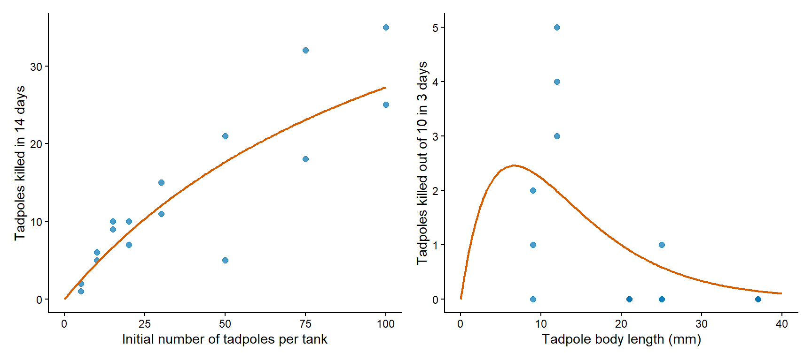
Figure 1: Two reed frog predation experiments with curves whose parameter values were chosen by eye. Left: number of tadpoles killed against the initial number of tadpoles per tank, with a Michaelis–Menten function (a = 60, b = 120). Right: number of tadpoles killed out of 10 against body length, with a Ricker function (a = 1, b = 0.15).
Practice: units of the parameters of a growth curve
The height of a plant (cm) as a function of its age (days) is described with the function \(f(x)=\dfrac{a}{1+e^{-b(x-c)}}\). What are the units of \(a\), \(b\) and \(c\)?
Solution
The parameter \(c\) is subtracted from \(x\), so it has the units of \(x\) (days). The argument of the exponential, \(b(x-c)\), has no units, so \(b\) has the inverse units of \(x\) (1/day). The denominator then has no units, so \(a\) has the units of \(y\) (cm).
3.1 Phenomenological and mechanistic functions
A phenomenological function describes the pattern in the data: it has the right shape, and its parameters describe that shape (a height, a location, a steepness). A mechanistic function is derived from assumptions about the process that generates the pattern, so its parameters measure something in the system (a rate, a time, a probability). The difference lies in how we arrive at the formula, and the same formula can be either. Above we chose the Michaelis–Menten function only because it increases and levels off. It can also be derived from the way in which a predator spends its time, and the derivation is short enough to show it here as an example.
Suppose that a predator hunts for a total time \(T\) in a tank with \(N\) prey. While it searches, it encounters a fraction \(\alpha\) of the prey per unit of time (the attack rate). Every prey that it catches costs it a handling time\(H\) (to subdue, eat and digest the prey) during which it does not search. If the predator searches for a time \(T_s\), the number of prey that it eats is \(N_e=\alpha NT_s\), and the total time is the sum of the time spent searching and the time spent handling, \(T=T_s+HN_e\). We substitute \(T_s=T-HN_e\) in the expression for \(N_e\) and solve for \(N_e\):
where \(N_e/T\) is the number of prey eaten per unit of time. This is the disc equation of Holling,4 better known in ecology as the Holling type II functional response. As for the units, \(\alpha\) is a fraction per unit of time (e.g., per day) and \(H\) is a time per prey (e.g., days per tadpole), so \(\alpha HN\) has no units, as it must if we add it to the number 1. When prey are scarce the predator spends all of its time searching and eats \(\alpha N\) prey per unit of time. When prey are abundant it spends all of its time handling them and eats \(1/H\) prey per unit of time.
If we divide the numerator and the denominator by \(\alpha H\), we find that the disc equation is the Michaelis–Menten function5 with \(x=N\), \(a=1/H\) and \(b=1/(\alpha H)\). Section 8.2 works out this conversion with numbers. So, if we accept the assumptions of the derivation, the asymptote of the curve in the left panel of Figure 1 measures a handling time, which is a quantity that could also be measured directly by watching a predator. The parameters of a phenomenological function have no such second meaning. Many of the functions in the Supplement can be derived from a mechanism, and each entry says whether that is the case.
Note that a mechanistic derivation tells us what the parameters would measure if its assumptions held. A curve that fits the data well does not show that they hold, because other processes can produce the same shape (we chose the Michaelis–Menten shape above only because it increases and levels off).
3.2 The two functions of this chapter
The chapter analyses two functions in full, each with a shape that is common in ecological data (Figure 2). To describe the shapes of functions we need four terms. A function is monotonic when it only increases or only decreases over its domain, saturating when it increases and levels off at an upper limit, unimodal (or hump-shaped) when it rises to a single maximum and declines after it, and sigmoid (or S-shaped) when it increases slowly at first, then fast, and then slowly again. The two functions are:
Michaelis–Menten, \(f(x)=\dfrac{ax}{b+x}\). It is monotonic and saturating: it increases from zero towards \(a\). It describes rates that are limited by something other than \(x\) when \(x\) is abundant, such as a feeding rate as a function of the density of prey or the uptake of a nutrient as a function of its concentration (entry).
Ricker, \(f(x)=axe^{-bx}\).6 It is unimodal: it rises from zero to a maximum and declines towards zero. Besides the number of recruits as a function of the number of spawners, it is used for any response that is highest at intermediate values of the predictor (entry).
Two other shapes return in the practical and in later chapters, and the supplement has a full entry for a function of each. The exponential decay, \(f(x)=ae^{-bx}\), is monotonic: it decreases from \(a\) at \(x=0\) towards zero, as a quantity does that loses a constant fraction per unit of \(x\). The logistic function, \(f(x)=a/(1+e^{-b(x-c)})\), is sigmoid: it increases from zero towards \(a\) and it is steepest half-way.
The formulas of this book share the letters \(a\), \(b\), \(c\) and \(d\). These letters are positions in a formula and they control something different in each function, so for every function we will say what each of them does. Symbols with an ecological meaning, such as \(\alpha\) and \(H\) above, appear only when we discuss a particular parameterisation. Note also that some of these letters had other meanings for the distributions of the previous chapters (\(a\) and \(b\) are the parameters of the Beta distribution, \(k\) is the shape of the Negative Binomial distribution and \(K\) the number of parameters in AIC).
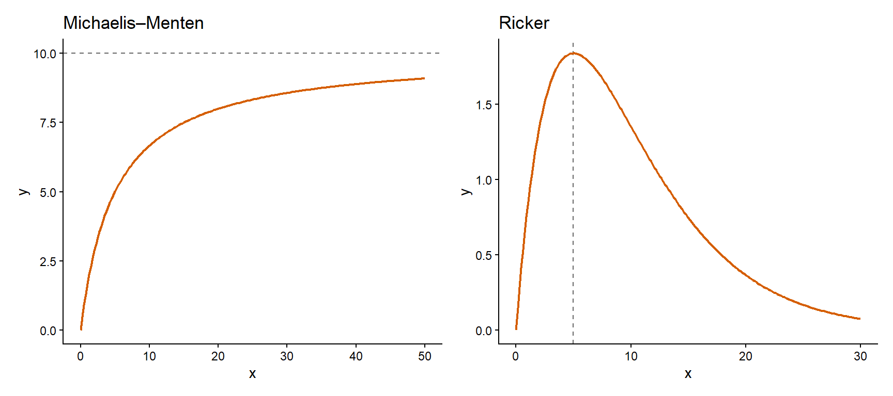
Figure 2: The two functions of this chapter. Left: Michaelis–Menten function with a = 10 and b = 5; the dashed line marks its asymptote. Right: Ricker function with a = 1 and b = 0.2; the dashed line marks the location of its peak.
4 Functions in R
To explore a function we first write it in R. An R function for \(f(x)\) takes the input as its first argument and the parameters as further arguments. We give each parameter a default value, written as a = 1 in the definition, which R uses when a call does not mention that argument. For the Ricker function:
# A function of x with two parameters; a and b have default values of 1,# which R uses when the call does not give themricker =function(x, a =1, b =1) { a * x *exp(-b * x)}# One value of x with the default parametersricker(x =2)
[1] 0.2706706
# One value of x with other values of the parametersricker(x =2, a =1, b =0.15)
[1] 1.481636
# Several values of x at once: the arithmetic is vectorisedricker(x =c(0, 2, 5, 10), a =1, b =0.15)
[1] 0.000000 1.481636 2.361833 2.231302
# One value of x and several values of aricker(x =2, a =c(1, 2, 3), b =0.15)
[1] 1.481636 2.963273 4.444909
The first call uses the default values and returns \(2e^{-2}\approx0.271\). The arithmetic of R is vectorised (see the practical of Chapter 1), so the same function accepts a vector of inputs and returns one output for each of them, which is what we need to draw a curve. It also accepts a vector of values for a parameter, which shows how the output at a fixed \(x\) changes with that parameter: in the last call the output is proportional to \(a\). The Michaelis–Menten function is written in the same way:
# The Michaelis–Menten function, with the same layoutmichaelis_menten =function(x, a =1, b =1) { a * x / (b + x)}michaelis_menten(x =c(5, 20, 50, 100), a =60, b =120)
[1] 2.400000 8.571429 17.647059 27.272727
For a quick look at a function we use curve(). Its first argument is an expression written in terms of x, which curve() evaluates between the values from and to. With add = TRUE it draws on top of the existing plot, which is a fast way of seeing what a parameter does. Here, halving \(b\) makes the Michaelis–Menten function rise faster towards the same asymptote:
# Quick exploration with curve(): the first argument is an expression in xcurve(michaelis_menten(x, a =60, b =120), from =0, to =100,xlab ="x", ylab ="y", ylim =c(0,40))# add = TRUE draws another curve on the same plotcurve(michaelis_menten(x, a =60, b =60), add =TRUE, lty =2)
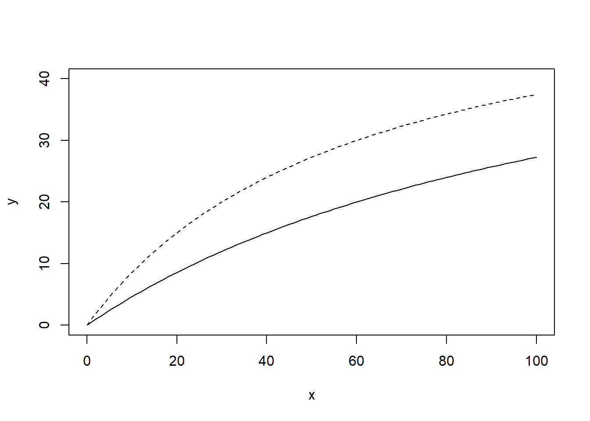
The figures of this book are drawn with ggplot2. For those we can calculate the function on a sequence of values of \(x\), store the result in a data frame and draw it as a line (Figure 3):
# The pattern used for the figures of this book: a sequence of x values,# a data frame with the function values, and ggplot2x_values =seq(0, 40, length.out =200)ricker_curves =data.frame(x =rep(x_values, times =2),y =c(ricker(x_values, a =1, b =0.15), ricker(x_values, a =1, b =0.3)),b =rep(c("b = 0.15", "b = 0.3"), each =length(x_values)))ggplot(ricker_curves, aes(x = x, y = y, linetype = b)) +geom_line(colour ="#D55E00", linewidth =0.8) +labs(x ="x", y ="y", linetype =NULL) +theme_classic()
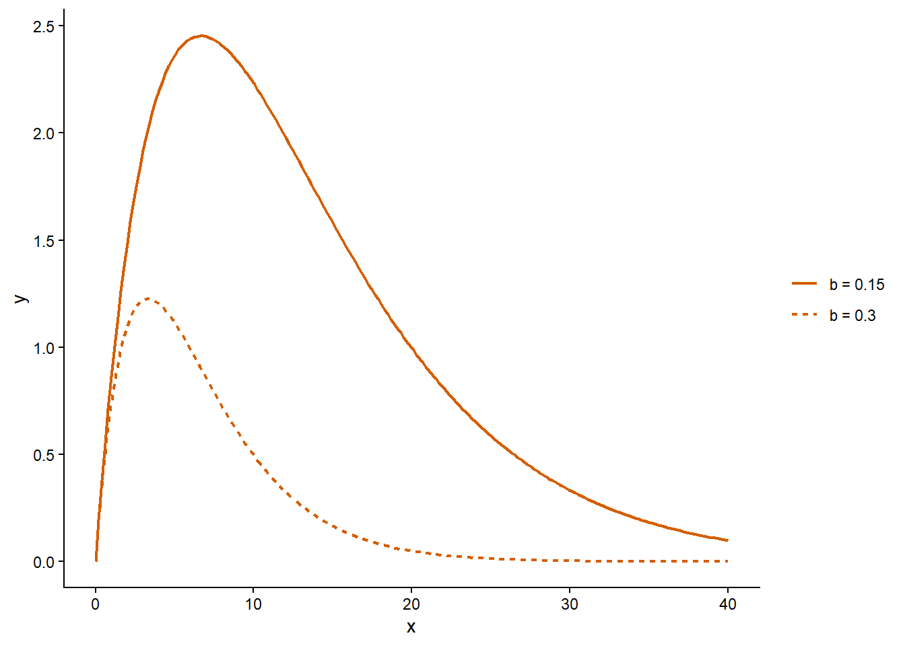
Figure 3: Ricker function with a = 1 for two values of b.
Doubling \(b\) moves the peak of the Ricker function to the left and lowers it. We will see why in Section 7.1.
Some functions are defined by different formulas on different parts of their domain (piecewise functions). In R we write them with ifelse(), which takes a condition and two expressions: for each element of x it returns the value of the first expression where the condition is TRUE and the value of the second one where it is FALSE. Two examples are the threshold function, which jumps from \(a\) to \(b\) at \(x=c\), and the hockey stick, which increases as a straight line with slope \(a\) up to \(x=c\) and stays at \(ac\) from there on (Figure 4). The hockey stick can also be written with pmin(), which returns the smaller of two values for each element of x:
# Functions defined in pieces: ifelse() chooses between two expressions# for each value of x. The third parameter is called c, as in the formula. R keeps# functions and other objects apart, so c() below still combines valuesthreshold =function(x, a =0, b =1, c =1) {ifelse(x < c, a, b)}hockey_stick =function(x, a =1, c =1) {ifelse(x < c, a * x, a * c)}# pmin() takes the smaller of the two values for each x: a shorter hockey stickhockey_stick_short =function(x, a =1, c =1) {pmin(a * x, a * c)}x_values =c(0, 2.5, 5, 7.5, 10)hockey_stick(x_values, a =2, c =5)
[1] 0 5 10 10 10
hockey_stick_short(x_values, a =2, c =5)
[1] 0 5 10 10 10
Both versions return the same values: the function increases by \(a=2\) per unit of \(x\) up to \(x=5\) and stays at \(ac=10\) beyond it. Note that these functions have a parameter called c, as in their formulas. This does not interfere with the function c() that combines values, because R looks for a function whenever a name is followed by parentheses.
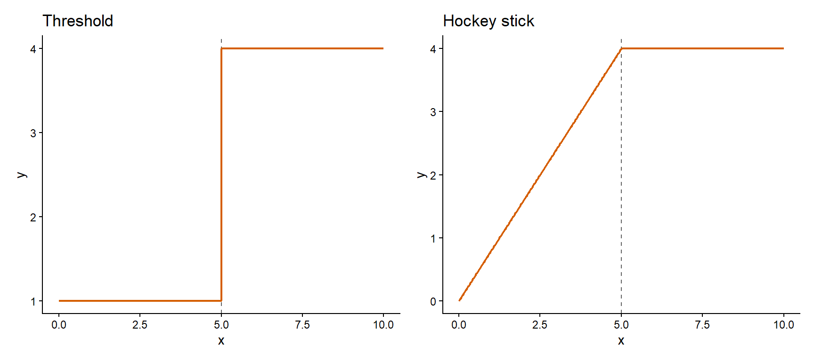
Figure 4: Two functions defined in pieces. Left: threshold function with a = 1, b = 4 and c = 5. Right: hockey stick function with a = 0.8 and c = 5.
4.1 Functions of two inputs
A function of two inputs assigns one output to each pair of values of its inputs, \(y=f(x_1,x_2)\). Its graph is a surface over the plane of the two inputs. We need such functions when a response depends on two predictors, and we have already met one: the log-likelihood of a model with two parameters in Chapter 4 was a surface over the plane of the two parameters.
As an example we combine the two reed frog experiments in one function. According to the disc equation, a predator eats \(\alpha N/(1+\alpha HN)\) prey per unit of time, so each of the \(N\) tadpoles in a tank is eaten at a rate \(\alpha/(1+\alpha HN)\), which we will call its mortality risk. Suppose now that the attack rate depends on the body length \(s\) of the tadpoles as a Ricker function, \(\alpha(s)=ase^{-bs}\), so that tadpoles of intermediate length are attacked the most. The mortality risk is then a function of body length and of density:
\[
f(s,N)=\frac{\alpha(s)}{1+\alpha(s)HN}.
\]
We take \(a=0.02\)/day/mm and \(b=(1/12)\)/mm (so the attack rate is highest for tadpoles of 12 mm, where it is \(0.02\times12\times e^{-1}\approx0.088\)/day) and a handling time \(H=0.5\) days per tadpole. For a tadpole of 12 mm in a tank with 20 tadpoles the risk is \(0.088/(1+0.088\times0.5\times20)\approx0.047\)/day. To evaluate the function for many combinations of the two inputs we use outer(), and we draw the surface with contour(), as in the practical of Chapter 1:
# Attack rate of the predator as a function of tadpole body length (mm)attack_rate =function(size, a =0.02, b =1/12) { a * size *exp(-b * size)}# Per capita mortality risk: attack rate divided by 1 + attack rate x handling time x densitymortality_risk =function(size, density, H =0.5) { alpha =attack_rate(size) alpha / (1+ alpha * H * density)}# One pair of valuesmortality_risk(size =12, density =20)
[1] 0.04689074
# All combinations of 50 sizes and 50 densities: outer() needs a vectorised functionsize_values =seq(5, 40, length.out =50)density_values =seq(1, 100, length.out =50)risk_matrix =outer(size_values, density_values, mortality_risk)# Contour lines of the surfacecontour(size_values, density_values, risk_matrix,xlab ="Body length (mm)", ylab ="Tadpoles per tank")
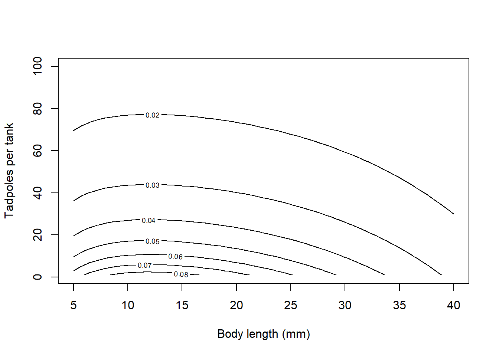
The function outer() calls mortality_risk() once, with all the combinations of the two vectors, so it requires a function that is vectorised. A likelihood function takes a whole sample and returns a single number for one set of parameter values, which is why in Chapter 4 we filled the grid with loops.
Figure 5 shows the same surface drawn with ggplot2. The risk is highest for tadpoles of about 12 mm at low density, and it decreases with density because the predators have less time available per tadpole. If we read the figure along a horizontal line (a fixed density) we see how the risk changes with body length alone, and along a vertical line we see how it changes with density alone. Looking at one input while the other is held fixed is the idea behind the partial derivative of Section 8.3. Note also that we built this function by placing one function inside another, which is called composition (Section 9.2).
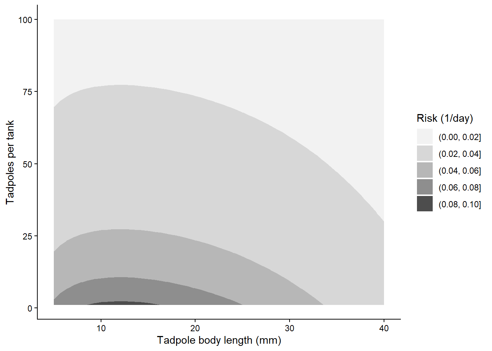
Figure 5: Per capita mortality risk of a tadpole as a function of its body length and of the number of tadpoles per tank. Shading shows the band of risk; each boundary joins the combinations of body length and density with the same risk.
5 Limits and asymptotes
The limit of a function as \(x\) approaches a value is the value that the function approaches as \(x\) gets closer and closer to it. We write \(\lim_{x\to\infty}f(x)=a\), or \(f(x)\to a\) as \(x\to\infty\), when the function approaches \(a\) as \(x\) grows without bound. A finite limit as \(x\to\infty\) is a horizontal asymptote: a horizontal line that the curve approaches (a curve may cross its asymptote, as the Holling type IV function does). The first thing to ask of a candidate function is where it starts and where it ends, since that must agree with what we know about the response. It turns out that those two values are usually parameters of the function or simple expressions of them, and this is how the parameters start to acquire a meaning.
Finding these limits rarely takes a long calculation. When a function is defined at a point and has no jump there, its limit is its value at that point, so the left end of our functions is found by setting \(x=0\). For the right end the working rule is to keep the term that grows fastest and to ignore the others. As \(x\to\infty\), an exponential \(e^{bx}\) grows faster than any power of \(x\), a higher power of \(x\) grows faster than a lower one, and any power grows faster than a constant. As \(x\to0\) the ranking is reversed: the constant, or else the lowest power of \(x\), is what remains. In plain English, at each end of a function only one term of every sum matters. The calculus refresher explains where this ranking comes from (L’Hôpital’s rule) and has more examples. For our two functions:
Michaelis–Menten. At \(x=0\) the numerator is zero, so \(f(0)=0\). For large \(x\) the constant \(b\) in the denominator is negligible next to \(x\). Formally, we divide the numerator and the denominator by \(x\) and obtain \(f(x)=a/(b/x+1)\to a\), because \(b/x\to0\). So \(a\) is the asymptote. For small \(x\) it is \(x\) that is negligible next to \(b\), so \(f(x)\approx(a/b)x\) when \(x\ll b\) (the symbol \(\ll\) reads “much smaller than”): the function starts as a straight line with slope \(a/b\).
Ricker. At \(x=0\), \(f(0)=0\). As \(x\to\infty\) the function is the product of a term that grows (\(x\)) and a term that approaches zero (\(e^{-bx}=1/e^{bx}\)). The exponential dominates, so \(f(x)\to0\). For small \(x\) the exponential is close to 1 and \(f(x)\approx ax\).
A limit can always be checked by evaluating the function at a very large or a very small value of \(x\). In R, for the curves of the previous sections:
# Fraction of the asymptote reached at the largest density in the data (100 tadpoles per tank)michaelis_menten(x =100, a =60, b =120) /60
[1] 0.4545455
# Fraction of the asymptote at x = 9bmichaelis_menten(x =9*120, a =60, b =120) /60
[1] 0.9
# For x much smaller than b the function is close to (a / b) xmichaelis_menten(x =1, a =60, b =120)
[1] 0.4958678
(60/120) *1
[1] 0.5
# The exponential dominates x in the Ricker function: values at large xricker(x =c(100, 1000), a =1, b =0.15)
[1] 3.059023e-05 7.175096e-63
With the values that we chose by eye for the tadpoles (\(a=60\) tadpoles killed and \(b=120\) tadpoles per tank), the curve has reached 45% of its asymptote at the highest density of the experiment, 100 tadpoles per tank. So the experiment covers less than half of the rise of the curve, which will matter when we read starting values from the plot (Section 10.1). In general, the Michaelis–Menten function approaches its asymptote slowly: it reaches 90% of it only at \(x=9b\). At the other end, the function gives 0.496 tadpoles killed for one tadpole per tank, close to the 0.5 of the straight line \((a/b)x\). The Ricker function of the size experiment is already at \(3\times10^{-5}\) for \(x=100\).
Practice: the two ends of two functions
The number of seeds produced by a plant decreases with the density of plants around it, \(x\), as the hyperbolic function \(f(x)=\dfrac{a}{b+x}\). Calculate \(f(0)\) and \(\lim_{x\to\infty}f(x)\).
The feeding rate of a predator that ignores scarce prey is described by the Holling type III function \(f(x)=\dfrac{ax^2}{b^2+x^2}\). Calculate \(f(0)\) and \(\lim_{x\to\infty}f(x)\). How does the function behave when \(x\ll b\)?
Solution
At zero, \(f(0)=a/b\): this is the seed production of a plant without neighbours. For large \(x\) the constant \(b\) is negligible next to \(x\), so \(f(x)\approx a/x\to0\).
At zero the numerator is zero, so \(f(0)=0\). For large \(x\) we divide the numerator and the denominator by \(x^2\), which gives \(a/(b^2/x^2+1)\to a\). For \(x\ll b\) the term \(x^2\) in the denominator is negligible next to \(b^2\), so \(f(x)\approx(a/b^2)x^2\). The function starts as a parabola, with a slope of zero, whereas the Michaelis–Menten function starts as a straight line.
6 Derivatives, slopes and curvature
The derivative of a function at a point, written \(f'(x)\) or \(\dfrac{df}{dx}\),7 is the slope of the function at that point: the change in \(y\) per unit change in \(x\), measured over an interval so short that the curve is indistinguishable from a straight line. It follows that the units of a derivative are the units of \(y\) divided by the units of \(x\). We have already used a derivative in Chapter 4 and they will come back in Chapter 6.
Derivatives are found with a small set of rules, listed in the table below, where \(c\), \(n\) and \(b\) are constants and \(g\) and \(h\) are functions of \(x\). This chapter recalls the rules and applies them. If they are not familiar, work through Rules of differentiation in the calculus refresher first.
Rule
Function
Derivative
Constant multiple
\(c\,g(x)\)
\(c\,g'(x)\)
Sum
\(g(x)+h(x)\)
\(g'(x)+h'(x)\)
Power
\(x^n\)
\(n\,x^{n-1}\)
Exponential
\(e^{bx}\)
\(b\,e^{bx}\)
Logarithm
\(\log x\)
\(1/x\)
Product
\(g(x)\,h(x)\)
\(g'(x)\,h(x)+g(x)\,h'(x)\)
Quotient
\(g(x)/h(x)\)
\(\dfrac{g'(x)\,h(x)-g(x)\,h'(x)}{h(x)^2}\)
Chain
\(g(h(x))\)
\(g'(h(x))\,h'(x)\)
The two functions require different rules. For the Michaelis–Menten function we use the quotient rule with \(g(x)=ax\) and \(h(x)=b+x\):
For the Ricker function we use the product rule with \(g(x)=ax\) and \(h(x)=e^{-bx}\), whose derivative is \(-b\,e^{-bx}\) by the rule for the exponential:
Note also the signs. The derivative of the Michaelis–Menten function is positive for every \(x\), whereas the derivative of the Ricker function changes sign.
If we now take the limits of these derivatives, we obtain the slope of each function at its two ends:
Function
Slope at \(x=0\)
Slope as \(x\to\infty\)
Michaelis–Menten
\(a/b\)
\(0\)
Ricker
\(a\)
\(0\)
Both functions become flat for large \(x\). At \(x=0\) the slope of the Michaelis–Menten function is \(a/b\), which is the straight line that we found with limits, and the slope of the Ricker function is \(a\). So the parameter \(a\) of the Ricker function is its initial slope, and in the Michaelis–Menten function the initial slope is a ratio of the two parameters.
We can verify our math with R. The function D() differentiates a formula with the rules of the table. It needs the formula as an expression that has not been evaluated, which expression() creates, and the name of the variable in quotes. Its result is another expression, which eval() evaluates for the values that we supply in a list:
# D() differentiates an expression: expression() stores the formula without evaluating itmm_expression =expression(a * x / (b + x))mm_derivative =D(mm_expression, "x")mm_derivative
a/(b + x) - a * x/(b + x)^2
# eval() evaluates the derivative for given values of the parameters and of xeval(mm_derivative, list(a =60, b =120, x =50))
[1] 0.2491349
# The formula derived on paper: a * b / (b + x)^260*120/ (120+50)^2
[1] 0.2491349
# A finite-difference slope: the change in y over a small change in xh =0.00001(michaelis_menten(50+ h, a =60, b =120) -michaelis_menten(50- h, a =60, b =120)) / (2* h)
[1] 0.2491349
D() applies the rules mechanically and does not simplify the result, so its output looks different from our formula, but it is the same function: both give a slope of 0.249 at \(x=50\) for the curve of the tadpoles. The units are tadpoles killed per tadpole per tank. That is, at a density of 50 tadpoles per tank, one more tadpole in the tank adds about a quarter of a tadpole to the expected number killed, against half a tadpole at very low density (\(a/b=0.5\)). The last lines of the chunk calculate the slope in a third way, as a finite difference: the change in the function between two points very close to \(x=50\), divided by the distance between them. This requires no calculus, and it is how software approximates a derivative when no formula is available (Chapter 8). The same check for the Ricker function, with \(a=10\) and \(b=0.5\) at \(x=4\):
# The same check for the Ricker function, with D() and with the formula# derived above, at x = 4ricker_derivative =D(expression(a * x *exp(-b * x)), "x")eval(ricker_derivative, list(a =10, b =0.5, x =4))
[1] -1.353353
# The formula derived on paper: a * (1 - b * x) * exp(-b * x)10* (1-0.5*4) *exp(-0.5*4)
[1] -1.353353
Again, D() and the formula that we derived return the same slope. It is negative, because \(x=4\) lies beyond the peak of this function.
The second derivative, written \(f''(x)\) or \(\dfrac{d^2f}{dx^2}\), is the derivative of the derivative: the rate at which the slope changes. Its sign describes the curvature of the function. Where \(f''(x)<0\) the slope decreases as \(x\) increases and the function is concave (it bends downwards). Where \(f''(x)>0\) the slope increases and the function is convex (it bends upwards). For the Michaelis–Menten function we differentiate \(f'(x)=ab(b+x)^{-2}\) with the power rule and the chain rule:
\[
f''(x)=-\frac{2ab}{(b+x)^3},
\]
which is negative for every \(x\ge0\). So the function is concave everywhere: every additional tadpole in the tank adds less to the number killed than the previous one, which is what saturating means. We also met the second derivative in Chapter 4, where the curvature of the log-likelihood at its maximum gave the standard error of an estimate (see Chapter 4). In R, we apply D() twice:
# Second derivative of the Michaelis–Menten function: D() applied twicemm_second =D(mm_derivative, "x")eval(mm_second, list(a =60, b =120, x =50))
[1] -0.002930999
# The formula derived on paper: -2 * a * b / (b + x)^3-2*60*120/ (120+50)^3
[1] -0.002930999
Practice: growth rate of a fish and metabolic rate of a mammal
The length of a fish (cm) at age \(x\) (years) follows the saturating exponential function \(f(x)=a\left(1-e^{-bx}\right)\) with \(a=60\) cm and \(b=0.2\)/year. Derive \(f'(x)\). How fast does the fish grow at birth and at an age of 5 years?
The metabolic rate of a mammal (W) as a function of its body mass \(x\) (kg) follows the power law \(f(x)=ax^{b}\) with \(a=3.4\) and \(b=0.75\). Derive \(f'(x)\) and calculate it for a mammal of 16 kg. What are its units?
Solution
The derivative of the constant \(a\) is zero, and the rule for the exponential gives \(f'(x)=-a\times(-b)\,e^{-bx}=ab\,e^{-bx}\). At birth the growth rate is \(ab=12\) cm/year, and at 5 years it is \(12e^{-1}\approx4.4\) cm/year.
The power rule gives \(f'(x)=ab\,x^{b-1}=2.55\,x^{-0.25}\). For \(x=16\) kg we have \(16^{-0.25}=1/2\), so the slope is about 1.3 W/kg: a mammal that is one kg heavier than 16 kg has a metabolic rate that is about 1.3 W higher.
7 Special points of a function
Limits and derivatives lead to a few points that summarise a curve: where it peaks, where it bends and how wide it is. These special points are what we can see in a plot of data. If we write them as expressions of the parameters, we can go from a plot to values of the parameters, which is what we will do at the end of the chapter (Section 10.1).
7.1 Maxima and minima
A critical point of a function is a value of \(x\) at which \(f'(x)=0\), so that the function is flat there. It is a maximum when the slope changes from positive to negative at that point, which is the case when \(f''(x)<0\) there, and a minimum when the slope changes from negative to positive (\(f''(x)>0\)).8 We saw above that the derivative of the Michaelis–Menten function never changes sign, which confirms that this function is monotonic and has no critical point.
The Ricker function has one. Its derivative is \(f'(x)=a(1-bx)e^{-bx}\), and since \(a\) and \(e^{-bx}\) are positive, it is zero only where \(1-bx=0\):
where \(x_{\max}\) is the location of the critical point and \(f(x_{\max})\) the value of the function there. The slope is positive for \(x<1/b\) and negative for \(x>1/b\), so the point is a maximum. That is, \(b\) alone decides where the peak is (note that \(1/b\) has the units of \(x\)), and for a given \(b\) the height of the peak is proportional to \(a\). This is why doubling \(b\) in Figure 3 halved both the location and the height of the peak. With the values of the size experiment, \(a=1\) tadpole killed/mm and \(b=0.15\)/mm, the peak is at \(1/0.15\approx6.7\) mm with a height of \(1/(0.15e)\approx2.45\) tadpoles killed. We can verify our math with R by looking for the highest value on a fine grid with which.max(), which returns the position of the highest value of a vector:
# Check the peak of the Ricker function on a fine grid of body lengthssize_grid =seq(0, 40, by =0.01)ricker_values =ricker(size_grid, a =1, b =0.15)# Location of the maximum and its heightsize_grid[which.max(ricker_values)]
[1] 6.67
max(ricker_values)
[1] 2.452529
# The values found on paper: 1 / b and a / (b * e)1/0.15
[1] 6.666667
1/ (0.15*exp(1))
[1] 2.45253
The smallest tadpoles of the experiment were 9 mm long and most tadpoles were killed at 12 mm, so a peak at 6.7 mm lies outside the data, as we saw in the right panel of Figure 1. Moving the peak to 12 mm requires \(b=(1/12)\)/mm, and the function then declines even more slowly at larger body lengths, because the same parameter controls the location of the peak and the rate of the decline.
The derivative of the Ricker function also shows a shortcut that we will use often. A product is zero only where one of its factors is zero, and a quotient is zero only where its numerator is zero. So to find the critical points of a function whose derivative is a quotient we only need the numerator of the derivative (e.g., for the Holling type IV function in the supplement).
7.2 Inflection points
An inflection point is a value of \(x\) at which \(f''(x)\) changes sign, so that the function changes from convex to concave or the other way around. At that point the slope stops increasing and starts to decrease (or the reverse), so the function is at its steepest or at its shallowest. For a sigmoid function the inflection point is where the response changes fastest, and together with the slope at that point it is what we read off a plot of data (for the logistic function it is the midpoint \(c\), as its entry in the supplement shows).
The second derivative of the Michaelis–Menten function is negative for every \(x\ge0\), so this function has no inflection point. For the Ricker function the product rule applied to \(f'(x)=a(1-bx)e^{-bx}\) gives
which is zero at \(x=2/b\), that is, at twice the location of the peak. The function is concave before that point and convex after it, so this is where the decline after the peak is steepest. The slope there is \(f'(2/b)=-a/e^{2}\), which is \(-0.135\) tadpoles killed/mm for the size experiment, where the inflection point is at \(2/0.15\approx13.3\) mm. In R:
# The Ricker function changes from concave to convex at 2 / b: the second# derivative is zero there, negative before it and positive after itricker_second =D(ricker_derivative, "x")eval(ricker_second, list(a =1, b =0.15, x =c(10, 2/0.15, 20)))
[1] -0.01673476 0.00000000 0.00746806
# Slope at the inflection point, and the formula derived on paper: -a / e^2eval(ricker_derivative, list(a =1, b =0.15, x =2/0.15))
[1] -0.1353353
-1/exp(2)
[1] -0.1353353
The second derivative is negative at 10 mm, zero at the inflection point and positive at 20 mm, and the slope at the inflection point is \(-0.135\) tadpoles killed/mm.
7.3 Half-maxima and characteristic scales
The half-maximum of a saturating function is the value of \(x\) at which the function reaches half of its asymptote. To find the half-maximum we set the function equal to \(a/2\) and solve for \(x\). For the Michaelis–Menten function:
where \(x_{1/2}\) denotes the half-maximum. So the parameter \(b\) of the Michaelis–Menten function is its half-maximum. With the values for the tadpoles, half of the asymptote (30 tadpoles killed) is reached at 120 tadpoles per tank, which is beyond the densities of the experiment. The same algebra shows that the function reaches 2/3 of its asymptote at \(x=2b\) and 3/4 at \(x=3b\) (Figure 6), which is the slow approach that we found with limits.
More generally, a parameter that multiplies or divides \(x\) wherever \(x\) appears in a formula is a scale parameter: changing it stretches or compresses the curve along the \(x\) axis without changing its shape. The parameter \(b\) of the Michaelis–Menten function is one, since \(ax/(b+x)=a(x/b)/(1+x/b)\). A scale parameter that divides \(x\) has the units of \(x\) and is the characteristic scale of the function: the distance along the \(x\) axis over which the function changes by a fixed proportion. A scale parameter that multiplies \(x\), as \(b\) does in \(e^{-bx}\), is a rate with the inverse units of \(x\), and the characteristic scale is then \(1/b\).
The Ricker function has such a rate: it can be written as \((a/b)\,(bx)\,e^{-bx}\), and its characteristic scale \(1/b\) is the location of its peak. The simplest example is the exponential decay, \(ae^{-bx}\), which falls by a factor \(e\approx2.72\) over every distance \(1/b\), wherever we start, and is halved over every distance \(\log 2/b\approx0.69/b\). When \(x\) is time the latter is the half-life, \(t_{1/2}=\log 2/b\) (its entry in the supplement has the details).
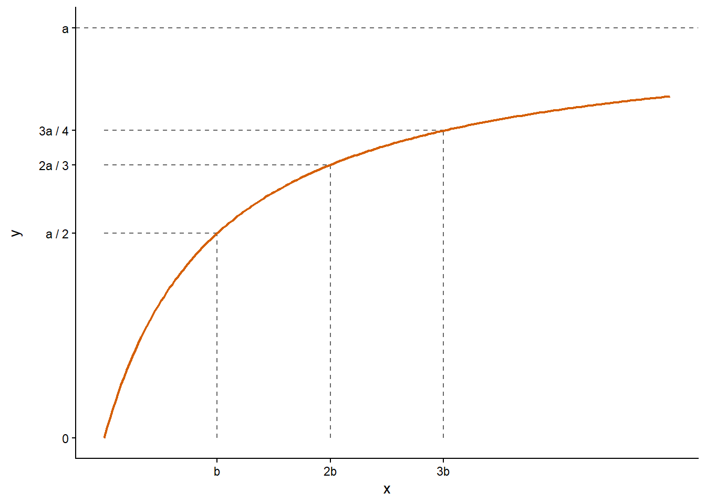
Figure 6: Michaelis–Menten function with a = 10 and b = 5. The function reaches half of its asymptote at x = b, 2/3 at 2b and 3/4 at 3b.
We can verify our math with R for the Michaelis–Menten function of the tadpoles, which returns 30, 40 and 45 tadpoles killed (1/2, 2/3 and 3/4 of its asymptote of 60):
# Michaelis–Menten function at b, 2b and 3bmichaelis_menten(x =c(120, 240, 360), a =60, b =120)
[1] 30 40 45
Some special points have no formula. For example, the body length at which the Ricker function has fallen back to half of its peak is the solution of \(axe^{-bx}=a/(2be)\), an equation that cannot be solved for \(x\) with algebra. In that case we find the point numerically with uniroot(), as we did for the endpoints of profile likelihood intervals in Chapter 4. uniroot() needs an interval at whose ends the function has opposite signs, and we choose it from the plot: at the peak (6.67 mm) the Ricker function is above half of its peak, and at 40 mm it is far below it.
# A point without a formula: where does the Ricker function fall back to half of its peak?peak_height =1/ (0.15*exp(1))# uniroot() needs an interval with a sign change; from the plot, the peak is at# 6.67 mm and the function is small at 40 mmhalf_peak =uniroot(function(x) ricker(x, a =1, b =0.15) - peak_height /2,interval =c(1/0.15, 40))half_peak$root
[1] 17.85565
So the Ricker function of the size experiment falls back to half of its peak at a body length of 17.9 mm.
Practice: a half-life and a half-maximum
The mass of leaf litter in a mesh bag decreases as \(ae^{-bx}\), where \(x\) is the time in days and \(b=0.02\)/day. Calculate the half-life of the litter and the time over which its mass falls by a factor \(e\).
Find the half-maximum of the Holling type III function \(f(x)=\dfrac{ax^2}{b^2+x^2}\).
Solution
The half-life is \(\log 2/b=0.693/0.02\approx34.7\) days, and the mass falls by a factor \(e\) every \(1/b=50\) days. Both are times, as they must be, because \(b\) has the inverse units of \(x\). Neither depends on the initial mass \(a\).
The asymptote is \(a\) (see the practice of Section 5), so we solve \(ax^2/(b^2+x^2)=a/2\). This gives \(2x^2=b^2+x^2\), so \(x^2=b^2\) and \(x_{1/2}=b\). Writing the function with \(b^2\) is what makes \(b\) the half-maximum, with the units of \(x\).
8 Parameters
In the previous sections we started from a formula and found the properties of its curve. This section looks at the same results from the side of the parameters: what each parameter means, how a function can be rewritten with other parameters, and how the function responds when a parameter changes.
8.1 The meaning of parameters
Once the special points and trends of a function are written as expressions of its parameters, the parameters can be related to the shape of the curve. The table below collects the results of the previous sections for the two functions. We will use it in the practical to interpret parameters and, in Chapter 6, to interpret estimates and to choose starting values. Every entry of the Supplement opens with the same summary for its function.
Function
Value at \(x=0\)
Limit as \(x\to\infty\)
Slope at \(x=0\)
Special point
Michaelis–Menten, \(\dfrac{ax}{b+x}\)
\(0\)
\(a\)
\(a/b\)
half-maximum at \(x=b\)
Ricker, \(axe^{-bx}\)
\(0\)
\(0\)
\(a\)
peak at \(x=1/b\) with height \(a/(be)\); inflection at \(2/b\)
8.2 Reparameterisation
A reparameterisation writes the same function with a different set of parameters. Each new parameter is an expression of the old ones, and the curve does not change: for corresponding values of the parameters, the two formulas return the same \(y\) for every \(x\). What changes is the meaning of the parameters, and with it their units and what we can read from them. To make sure that you are dealing with two parameterisation of the same function, you can check with numbers that they produce the same curve, as we do below.
The disc equation of Section 3.1 is a reparameterisation of the Michaelis–Menten function. If we divide its numerator and denominator by \(\alpha H\):
That is, the asymptote is the inverse of the handling time and the attack rate is the initial slope of the function.9 For the units we need to know over which time the response was measured. In the reed frog experiment the tadpoles killed were counted over the whole experiment (14 days, with three dragonfly larvae per tank), so the unit of time is one experiment. With \(a=60\) tadpoles killed and \(b=120\) tadpoles per tank, the attack rate is \(\alpha=60/120=0.5\) per experiment: at low density, half of the tadpoles are killed in the course of the experiment. The handling time is \(H=1/60\) of an experiment per tadpole killed, that is, the three larvae together cannot kill more than one tadpole every \(14/60\approx0.23\) days. In R:
# The Holling type II form of the Michaelis–Menten functionholling_2 =function(x, alpha =1, H =1) { alpha * x / (1+ alpha * H * x)}# a = 60 and b = 120 correspond to alpha = a / b and H = 1 / ax_values =c(5, 20, 50, 100)michaelis_menten(x_values, a =60, b =120)
[1] 2.400000 8.571429 17.647059 27.272727
holling_2(x_values, alpha =60/120, H =1/60)
[1] 2.400000 8.571429 17.647059 27.272727
# and back: a = 1 / H and b = 1 / (alpha * H)1/ (1/60)
[1] 60
1/ (0.5* (1/60))
[1] 120
Both forms return the same four values, and converting back gives \(a=60\) and \(b=120\).
The Ricker function can also be written with the location of its peak as a parameter, \(f(x)=axe^{-x/c}\) with \(c=1/b\), so that the parameter has the units of \(x\) and can be read from a plot:
# Ricker function with the peak location c as a parameter: b = 1 / cricker_peak =function(x, a =1, c =1) { a * x *exp(-x / c)}ricker(x =c(5, 10, 20), a =1, b =0.2)
[1] 1.8393972 1.3533528 0.3663128
ricker_peak(x =c(5, 10, 20), a =1, c =5)
[1] 1.8393972 1.3533528 0.3663128
Both calls return the same values. The entries of the supplement list the other forms of each function under “Also written”. The logistic function, for example, has three forms in common use, and its entry shows how to convert between them.
There can be multiple reasons why several parameterisations of a function are in use. For example, when derived mechanistically (\(\alpha\) and \(H\) measure something very specific, ecologically speaking). Sometimes, a parameter is easier to eyebal from a plot or to compare among studies (a peak location, a midpoint, a half-maximum). Another important reason is that the estimates of some sets of parameters are less correlated than those of others, which makes a model easier to fit (we saw a similar example for Negative Binomial distribution in Chapter 4).
8.3 Derivatives with respect to parameters
The partial derivative of a function with respect to one of its parameters is the derivative taken with \(x\) and the other parameters held fixed. To show the parameters we write the function as \(f(x;a,b)\) and the partial derivative with respect to \(a\) as \(\dfrac{\partial f}{\partial a}\). It tells us how much the function moves, at a given \(x\), when \(a\) changes by a small amount, so it is itself a function of \(x\). The rules of differentiation are the same as before; what differs is the quantity that varies (see Partial derivatives in the calculus refresher).
For the Michaelis–Menten function, \(a\) multiplies the ratio \(x/(b+x)\), which does not contain \(a\). For \(b\) we write the function as \(ax(b+x)^{-1}\) and use the power rule and the chain rule:
# Partial derivatives of the Michaelis–Menten function with respect to a and bmm_wrt_a =D(mm_expression, "a")mm_wrt_b =D(mm_expression, "b")mm_wrt_a
x/(b + x)
mm_wrt_b
-(a * x/(b + x)^2)
# Evaluated at x = 120 = b with a = 60 and b = 120eval(mm_wrt_a, list(a =60, b =120, x =120))
[1] 0.5
eval(mm_wrt_b, list(a =60, b =120, x =120))
[1] -0.125
# The formulas derived on paper120/ (120+120)
[1] 0.5
-60*120/ (120+120)^2
[1] -0.125
At a density of 120 tadpoles per tank, with \(a=60\) and \(b=120\), the two partial derivatives are 0.5 and \(-0.125\). That is, raising the asymptote by one tadpole killed raises the curve by half a tadpole at that density, and raising the half-maximum by one tadpole per tank lowers the curve by 0.125 tadpoles.
Figure 7 shows the two partial derivatives over a range of densities. The derivative with respect to \(a\) increases from 0 towards 1, so a change in \(a\) moves the curve most at large \(x\), where the curve is close to its asymptote. The derivative with respect to \(b\) is negative (a larger half-maximum means a lower curve). It is zero at both ends and largest in size at \(x=b\), where it equals \(-a/(4b)\). So a change in \(b\) leaves the two ends of the curve where they are and moves the curve most around its half-maximum. This has a consequence for data: the observations that can tell us about a parameter are those made where the curve responds to it (densities around \(b\) for \(b\), high densities for \(a\)). How much they tell us also depends on the variation of the observations there and on the other parameters, which is a topic for Chapter 6.
Partial derivatives with respect to parameters return twice in the book. The delta method uses them to calculate the uncertainty of a fitted curve from the uncertainty of its parameters, and the optimisers use them as the gradient that tells them in which direction to move. RTMB already applies both in Chapter 4 (through ADREPORT() and through the slope that it supplies to optim()), Chapter 6 explains how they are calculated, and Chapter 8 uses them to study the optimisers.
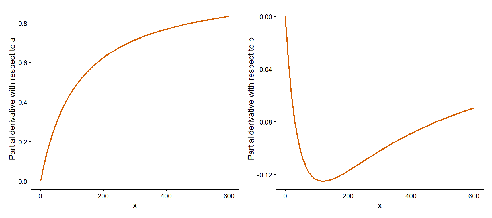
Figure 7: Partial derivatives of the Michaelis–Menten function with respect to a (left) and to b (right), for a = 60 and b = 120. Each curve shows how much the function changes at a given x when the parameter increases by one unit.
9 Building new functions
The functions that we have seen can be modified when none of them has the properties that a response requires. This section presents three ways of doing so: shifting and scaling a function, composing two functions, and adding a parameter that generalises a function.
9.1 Shifting and scaling
Any function can be stretched and moved along the two axes. There are four operations, and each of them adds one parameter:
scaling along the \(x\) axis: replace \(x\) by \(x/b\), which stretches the curve horizontally by a factor \(b\) (a scale parameter, as in Section 7.3);
scaling along the \(y\) axis: multiply the function by \(a\), which stretches the curve vertically by a factor \(a\);
shifting along the \(x\) axis: replace \(x\) by \(x-c\), which moves the curve to the right by \(c\). Such a parameter is called a location parameter;
shifting along the \(y\) axis: add \(d\) to the function, which moves the curve up by \(d\).
Let’s apply them one by one to the function \(x/(1+x)\), which starts at zero, has an asymptote of 1 and a half-maximum at \(x=1\). Scaling \(x\) gives \((x/b)/(1+x/b)=x/(b+x)\), and scaling \(y\) gives \(ax/(b+x)\). So the Michaelis–Menten function is the simplest saturating ratio with one scale parameter for each axis. Shifting it along both axes gives
where the landmarks have moved with the curve: the function starts at the point \((c,d)\), it reaches half of its rise at \(x=c+b\), where its value is \(d+a/2\), and it approaches \(d+a\) (Figure 8). The domain has moved as well. To the left of \(c\) the formula still returns numbers, but they are below \(d\) and they become infinite at \(x=c-b\), so the shifted function is used from \(c\) onwards only. In R, with \(a=4\), \(b=2\), \(c=1\) and \(d=1\):
# Start from x / (1 + x), scale x by b, scale y by a, then shift by c and dshifted_mm =function(x, a =1, b =1, c =0, d =0) { d + a * (x - c) / (b + (x - c))}# Values at c, c + b and for large x with a = 4, b = 2, c = 1, d = 1shifted_mm(x =c(1, 3, 1000), a =4, b =2, c =1, d =1)
[1] 1.000000 3.000000 4.992008
The function returns \(d=1\) at \(x=c\), \(d+a/2=3\) at \(x=c+b\), and a value close to \(d+a=5\) for a large \(x\). We have already seen a function of this kind: the curve for brain mass against body mass in Chapter 1 was a Michaelis–Menten function, shifted and scaled along both axes.
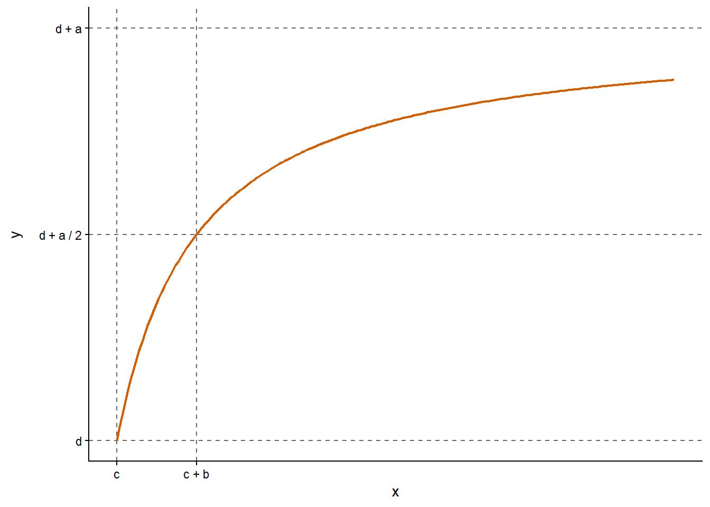
Figure 8: Michaelis–Menten function after scaling and shifting, d + a(x − c) / (b + (x − c)) with a = 4, b = 2, c = 1 and d = 1 for x ≥ c. The function starts at (c, d), reaches d + a/2 at x = c + b and approaches d + a.
9.2 Range and composition
The composition of two functions applies one function to the output of the other: \(f(x)=g(h(x))\), where \(h\) is the inner function and \(g\) the outer function. In this book we use composition to give a function the range that a quantity requires. The mean of a count must be positive and a probability must lie between 0 and 1, and a straight line \(a+bx\) respects neither of these restrictions. If we pass the line through an outer function whose range is the required one, the result respects them for any value of \(x\) and of the parameters.
For a positive quantity the outer function is the exponential: \(e^{a+bx}\) is positive whatever the values of \(a\), \(b\) and \(x\). Since \(e^{a+bx}=e^{a}e^{bx}\), this is an exponential function that starts at \(e^{a}\) and grows when \(b>0\) or decays when \(b<0\), so here \(a\) and \(b\) can take any real value. Every increase of \(x\) by one unit multiplies the function by \(e^{b}\).
For a quantity between 0 and 1 the outer function is the inverse logit, \(\operatorname{logit}^{-1}(z)=1/(1+e^{-z})\), which is plogis() in R. It lies between 0 and 1 for any \(z\). The inverse logit of a line, \(1/(1+e^{-(a+bx)})\), is the logistic function with an upper asymptote of 1. It is a sigmoid curve that is steepest at its midpoint, \(x=-a/b\), where the line equals zero, the function equals 0.5 and its slope is \(b/4\). The exponential and the inverse logit are the two functions that we used in Chapter 4 (section “Constraints and transformations”) to keep a parameter within its constraints during optimisation, with exp() for a positive parameter and plogis() for a probability. Here the same idea is applied to a function of \(x\).
The inner function does not have to be a straight line. If it is a parabola that opens downwards, the composition is a hump between 0 and 1:
To find its peak we use the chain rule, \(f'(x)=g'(h(x))\,h'(x)\). The inverse logit increases everywhere, so \(g'\) is positive and \(f'(x)\) is zero only where \(h'(x)=-2b(x-c)=0\), that is, at \(x=c\). In other words, an increasing outer function leaves the peaks of the inner function where they are. The height of the peak is \(\operatorname{logit}^{-1}(d)\). In R, with \(d=1\), \(b=0.1\) and \(c=5\):
# The inverse logit of a line: plogis() and the formula written outx_values =seq(0, 10, by =2.5)plogis(-4+0.8* x_values)
# The inverse logit of a quadratic: a hump between 0 and 1 with its peak at chump =function(x, b =1, c =0, d =0) {plogis(d - b * (x - c)^2)}hump(x =c(0, 5, 10), b =0.1, c =5, d =1)
[1] 0.1824255 0.7310586 0.1824255
plogis(1)
[1] 0.7310586
The first two lines of output are identical: plogis() is the inverse logit, and for the line \(-4+0.8x\) it returns 0.5 at the midpoint, \(x=4/0.8=5\). The hump has its highest value, 0.731, at \(x=5\), and that value is \(\operatorname{logit}^{-1}(1)\). Figure 9 shows the three compositions. In Chapter 6 we will use them to link a predictor to the mean of a Poisson distribution and to the probability of a Bernoulli distribution.
Practice: seedlings along a moisture gradient
The expected number of seedlings in a quadrat is described as \(e^{a+bx}\), where \(x\) is the soil moisture (%), \(a=-2\) and \(b=0.4\) per unit of moisture. What is the expected number at \(x=5\)? By which factor does it change when the moisture increases by one unit, and by 5 units?
Solution
At \(x=5\) the exponent is \(-2+0.4\times5=0\), so the expected number is \(e^{0}=1\) seedling per quadrat. An increase of one unit multiplies the function by \(e^{0.4}\approx1.49\), and an increase of 5 units by \(e^{0.4\times5}=e^{2}\approx7.4\). The change is a factor, the same at any moisture, and the function stays positive.
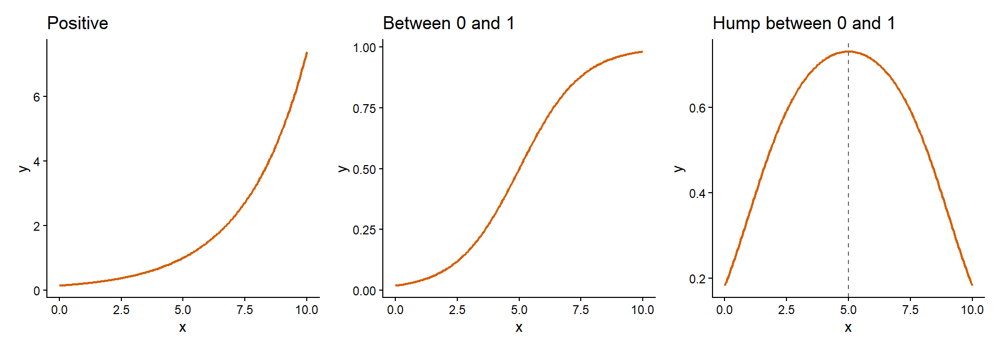
Figure 9: Three compositions that give a function the range it needs. Left: exp(a + bx) is positive (a = −2, b = 0.4). Centre: the inverse logit of a line lies between 0 and 1 (a = −4, b = 0.8). Right: the inverse logit of a quadratic is a hump between 0 and 1 with its peak at c (d = 1, b = 0.1, c = 5).
9.3 Nested functions
A function is nested in another function when it is the special case that we obtain by fixing one of the parameters of the other at a particular value. Adding a parameter is the usual way of making a function more flexible, and comparing a function with its generalisation is the most common comparison of models. Chapter 4 introduced AIC for comparing models, and in Chapter 6 we will use it to compare response curves.
Let’s go back to the size experiment, for which the Ricker function was too wide. The generalised Ricker function10 is
where the term in brackets is a Ricker function written so that its peak is at \(x=b\) and has a height of 1. Raising it to the power \(c\) leaves the peak where it is, so for any \(c\) the parameter \(b\) is the location of the peak (in mm) and \(a\) is its height (in tadpoles killed). The exponent \(c\) has no units and controls the width: away from the peak the term in brackets is below 1, and a number below 1 becomes smaller when it is raised to a higher power, so a larger \(c\) gives a narrower peak. With \(c=1\) the function is \((ae/b)\,xe^{-x/b}\), a Ricker function with parameters \(ae/b\) and \(1/b\). So the Ricker function is nested in the generalised Ricker function. In R:
generalised_ricker =function(x, a =1, b =1, c =1) { a * ((x / b) *exp(1- x / b))^c}# With c = 1 it is a Ricker function with parameters a * e / b and 1 / bx_values =c(5, 12, 20, 30)generalised_ricker(x_values, a =4, b =12, c =1)
[1] 2.986670 4.000000 3.422781 2.231302
ricker(x_values, a =4*exp(1) /12, b =1/12)
[1] 2.986670 4.000000 3.422781 2.231302
# With c = 30 the peak at b = 12 is much narrowergeneralised_ricker(x_values, a =4, b =12, c =30)
The first two lines of output are identical, as they should be. With \(c=30\) the function still returns 4 tadpoles killed at 12 mm, but at 20 mm it has fallen to 0.04, against 3.4 for \(c=1\). Figure 10 shows the data with the Ricker function of Figure 1 and with this generalised Ricker function, which places a narrow peak at 12 mm as the data require. Note that a narrow peak needs a large exponent.
Other functions are generalised in the same way. The Shepherd function, \(ax/(b+x^{c})\), and the Hassell function, \(ax/(b+x)^{c}\), both contain the Michaelis–Menten function as the case \(c=1\), and the Richards function contains the logistic function. The cost of the additional flexibility is that exponents such as \(c\) are hard to estimate from data, a point that we take up in Chapters 6 and 8.
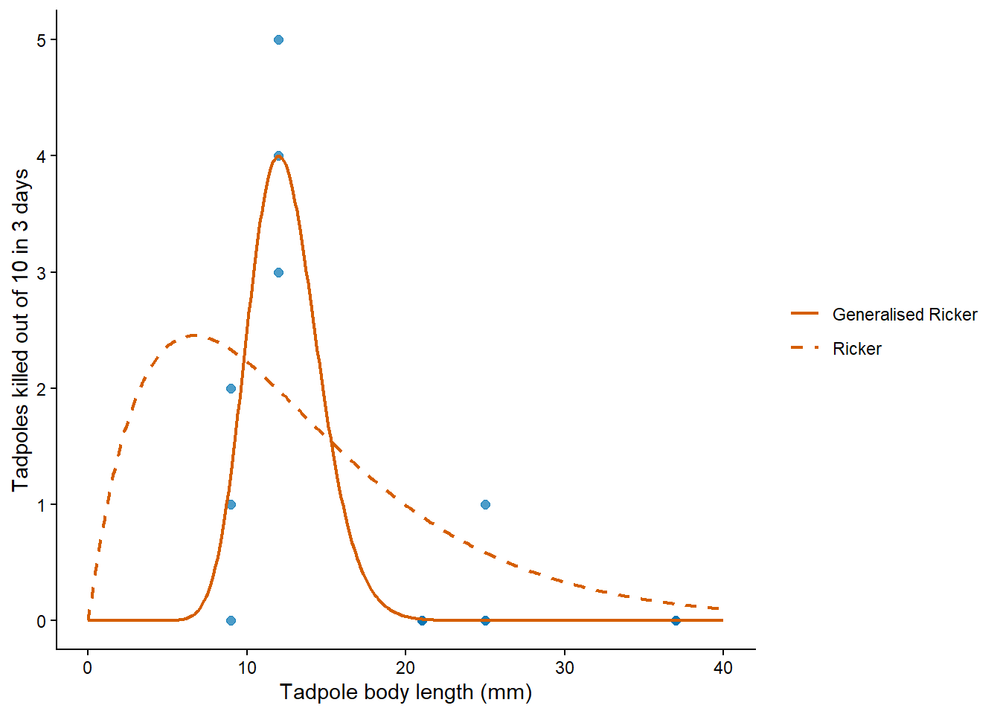
Figure 10: Tadpoles killed out of 10 against body length, with the Ricker function of the first figure (dashed line, a = 1, b = 0.15) and a generalised Ricker function (solid line, a = 4, b = 12 and c = 30). Setting c = 1 in the generalised function gives a Ricker function.
10 Choosing a function
The two functions of this chapter are a small part of the functions that are used in ecology. The others are described in the Supplement, with the formula, the landmarks, a worked example and a practice exercise for each of them. You should read at least the entries of the functions that the practical names.
To choose a function for a response we go through the questions that the tools of this chapter answer. Where does the response start: at zero or at a positive value, and with a slope or flat? Where does it end: at an asymptote, at zero, or does it keep increasing? Is it monotonic in between, or does it have a maximum? If it saturates, does it bend downwards from the start (concave everywhere) or does it accelerate first (sigmoid)? And is there a mechanism that suggests a formula? The table below gives the answers for the functions of the supplement.
The supplement also has entries for functions that join two straight lines (piecewise linear), for growth curves (von Bertalanffy) and for a saturating function whose bend can be made sharper or smoother (the non-rectangular hyperbola).
Note that several functions give the same answers. The saturating exponential and the Michaelis–Menten function both start at zero as a straight line and level off at an asymptote, and the logistic and the Holling type III functions are both sigmoid. Within each pair, the function built from an exponential approaches its asymptote faster than the one built from a ratio, but over the range of a typical set of data the two differ little. The choice between them then rests on a mechanism, on what is customary in a field, or on which parameters are easier to interpret. As we said for distributions in Chapter 2, there is no correct function for a given set of data. When several candidates remain, we compare the fitted models formally (see Chapter 4 and Chapter 6).
10.1 Starting values by eye
The optimiser of Chapter 4 needs a starting value for every parameter. For the parameters of a distribution we used the method-of-moments estimates. For the parameters of a function we read them from a plot of the data. We look in the plot for the landmarks of the function (a value at zero, an initial slope, an asymptote, a peak, a half-maximum), we calculate the parameters from them with the expressions of Section 8.1, and then we draw the curve over the data and adjust the values. Let’s do this for the two reed frog experiments.
For the experiment on density we use the Michaelis–Menten function, whose landmarks are the initial slope \(a/b\) and the asymptote \(a\). The initial slope can be read from the data: at the two lowest densities about half of the tadpoles were killed (1 and 2 out of 5, 5 and 6 out of 10), so \(a/b\approx0.5\). The asymptote cannot be read, because the numbers killed are still increasing at 100 tadpoles per tank. All that we can say is that \(a\) lies above the highest number killed (35). If we take \(a=60\) tadpoles killed, the initial slope gives \(b=60/0.5=120\) tadpoles per tank. We draw this curve over the data, together with two curves that have the same initial slope and an asymptote that is two and four times higher:
# Tadpoles killed against initial density, with candidate curves added one by oneplot(Killed ~ Initial, data = ReedfrogFuncresp,xlab ="Initial number of tadpoles per tank", ylab ="Tadpoles killed in 14 days")curve(michaelis_menten(x, a =60, b =120), add =TRUE, lty =1)curve(michaelis_menten(x, a =120, b =240), add =TRUE, lty =2)curve(michaelis_menten(x, a =240, b =480), add =TRUE, lty =3)
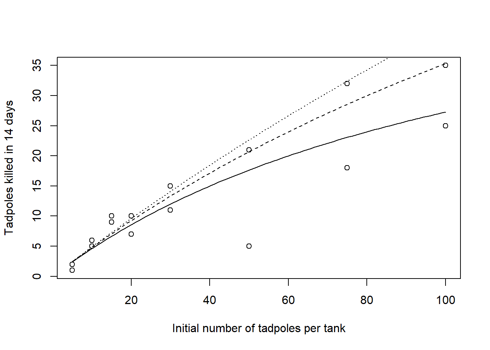
Figure 11: Reed frog functional response with three Michaelis–Menten curves that share the initial slope a/b = 0.5 and differ in the asymptote: a = 60 (solid), a = 120 (dashed) and a = 240 (dotted).
The three curves of Figure 11 predict 27, 35 and 41 tadpoles killed at the highest density, a difference of the same size as the one between the two tanks at that density (25 and 35 tadpoles killed). So these data tell us the ratio \(a/b\) but little about \(a\) and \(b\) separately, which is what we expected from an experiment that covers less than half of the rise of the curve (Section 5). Any of the three pairs is a reasonable starting value. What this means for the estimates and for their uncertainty is a question for Chapter 6.
For the experiment on body length we use the generalised Ricker function, whose peak location and peak height are parameters. Most tadpoles were killed at 12 mm, where the three tanks lost 3, 4 and 5 tadpoles, so we read \(b=12\) mm and \(a=4\) tadpoles killed. The exponent \(c\) has no landmark that we can read, so we find it by trying values:
# Tadpoles killed against body length: the peak is at about 12 mm with a height# of about 4; the exponent c is found by trying valuesplot(Kill ~ TBL, data = ReedfrogSizepred,xlab ="Tadpole body length (mm)", ylab ="Tadpoles killed out of 10 in 3 days")curve(generalised_ricker(x, a =4, b =12, c =5), add =TRUE, lty =1)curve(generalised_ricker(x, a =4, b =12, c =20), add =TRUE, lty =2)curve(generalised_ricker(x, a =4, b =12, c =50), add =TRUE, lty =3)
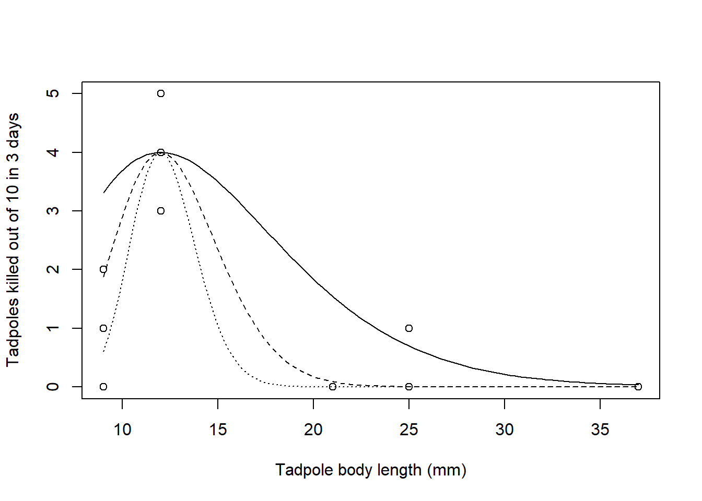
Figure 12: Reed frog size experiment with three generalised Ricker curves that share the peak read from the plot (a = 4, b = 12) and differ in the exponent: c = 5 (solid), c = 20 (dashed) and c = 50 (dotted).
With \(c=5\) the peak is too wide (Figure 12): the curve predicts 3.3 tadpoles killed at 9 mm and 1.5 at 21 mm, where the tanks lost 0 to 2 tadpoles and none. With \(c=20\) and \(c=50\) the curve is close to zero from 21 mm onwards, as in the data, and the two values differ mostly in what they predict at 9 mm (1.9 and 0.6 tadpoles killed). A value between 20 and 50 is therefore a reasonable start, and it is the reason why we used \(c=30\) in Figure 10.
Values read in this way are where a fit starts. In Chapter 6 the optimiser takes them and improves them by maximum likelihood, and the better we understand the function, the closer our starting values are to the estimates.
11 Summary
A deterministic function assigns one output to each input for given values of its parameters. In an ecological model it describes how an expected response changes with a predictor. A function is phenomenological when it only describes the shape of the response and mechanistic when it is derived from assumptions about the process, as the disc equation is from the time that a predator spends searching and handling prey. The units of the parameters follow from the formula. We analysed two functions in full, the Michaelis–Menten function (saturating) and the Ricker function (unimodal), and the supplement describes the others.
The shape of a function is found from its formula with a few tools. Limits give the two ends of the function and its asymptotes. The derivative gives the slope at any point and the second derivative the curvature, concave or convex. From them we obtain the special points of a function: a maximum where the derivative is zero and changes sign, an inflection point where the second derivative changes sign, and a half-maximum or a characteristic scale by solving the function for \(x\). Each of these results can be checked in R, with D(), with a finite difference, on a grid or with uniroot().
The special points give the parameters a meaning. The asymptote and the half-maximum are the parameters of the Michaelis–Menten function, and the initial slope and the location of the peak of the Ricker function are \(a\) and \(1/b\). A reparameterisation writes the same curve with other parameters, such as the attack rate and the handling time. A partial derivative with respect to a parameter shows where along \(x\) the curve responds to that parameter.
New functions are built from existing ones by shifting and scaling, by composition, which gives a function the range that a quantity requires, and by adding a parameter, so that the original function is nested in the new one.
A function is chosen by asking where the response starts and ends, whether it has a maximum and whether a mechanism suggests a formula, and the starting values of its parameters are read from a plot through its landmarks. In Chapter 6 the two pillars of the book come together: the mean of a distribution follows one of these functions, and its parameters are estimated by maximum likelihood, starting from values read by eye.
12 Chapter quiz
The questions below follow the order of the chapter. Try each question before opening its solution.
Question 1: seed dispersal
The density of seeds on the ground (seeds/m²) at a distance \(x\) (m) from a parent tree is described by \(f(x)=ae^{-bx}\). What are the domain and the range of this function? What are the units of \(a\) and \(b\)?
Answer
A distance cannot be negative, so the domain is \(x\ge0\). The function equals \(a\) at \(x=0\) and decreases towards zero without reaching it, so its range is \(0<y\le a\). The parameter \(a\) has the units of \(y\) (seeds/m²). The argument of the exponential has no units, so \(b\) has the inverse units of \(x\) (1/m).
Question 2: ladybirds and aphids
A ladybird on a plant with \(N\) aphids encounters a fraction \(\alpha=0.1\) of the aphids per hour of searching and needs \(H=0.25\) hours to handle each aphid. According to the disc equation, how many aphids does it eat per hour on a plant with 40 aphids? What is the highest feeding rate that it can reach, and why can it not exceed it?
Answer
The feeding rate is \(\alpha N/(1+\alpha HN)=0.1\times40/(1+0.1\times0.25\times40)=4/2=2\) aphids/hour. The highest rate is \(1/H=4\) aphids/hour: a ladybird that spent all of its time handling aphids, and none searching, would eat one aphid every quarter of an hour. At 40 aphids per plant it eats half of that, so 40 aphids is the half-maximum, \(1/(\alpha H)\).
Question 3: pitfall traps
The number of beetle species found with \(x\) pitfall traps is described by the saturating exponential function \(f(x)=40\left(1-e^{-0.1x}\right)\). What is the value of the function at \(x=0\) and what is its limit as \(x\to\infty\)? How many species does it give for 10 traps?
Answer
At \(x=0\), \(e^{0}=1\) and \(f(0)=0\): without traps no species are found. As \(x\to\infty\), \(e^{-0.1x}\to0\) and \(f(x)\to40\) species, which is the asymptote. For 10 traps the function gives \(40(1-e^{-1})\approx25.3\) species, that is, 63% of the asymptote.
Question 4: nitrate uptake
The uptake of nitrate by roots (µmol/g/hour) as a function of the concentration of nitrate \(x\) (µmol/L) is \(f(x)=8x/(2+x)\). Calculate the slope of the function at \(x=0\) and at \(x=2\). What are the units of the slope?
Answer
The derivative of the Michaelis–Menten function is \(f'(x)=ab/(b+x)^2=16/(2+x)^2\). At \(x=0\) it is \(16/4=4\) and at \(x=2\) it is \(16/16=1\). The units are those of \(y\) divided by those of \(x\): (µmol/g/hour)/(µmol/L). That is, at a concentration of 2 µmol/L an additional µmol/L raises the uptake by about 1 µmol/g/hour, a quarter of the increase at very low concentration.
Question 5: salmon recruitment
The number of recruits of a salmon stock (in thousands) as a function of the number of spawners \(x\) (in thousands) is described by the Ricker function \(f(x)=3xe^{-0.01x}\). At which number of spawners is recruitment highest, and how many recruits does the function give there?
Answer
The derivative \(f'(x)=a(1-bx)e^{-bx}\) is zero at \(x=1/b=1/0.01=100\) thousand spawners. It is positive below that value and negative above it, so this is a maximum. The number of recruits there is \(a/(be)=3/(0.01e)\approx110\) thousand.
Question 6: bumblebees and flowers
The number of flowers that a bumblebee visits per minute as a function of the density of flowers \(x\) (flowers/m²) is \(f(x)=12x/(30+x)\). At which density does the bumblebee reach half of its highest visiting rate? Which fraction of that rate does it reach at 90 flowers/m², and which density does it need to reach 90% of it?
Answer
The asymptote is \(a=12\) flowers/min and the half-maximum is \(b=30\) flowers/m², where the function gives 6 flowers/min. A density of 90 flowers/m² is \(3b\), so the function reaches 3/4 of its asymptote there: \(12\times90/120=9\) flowers/min. For 90% we solve \(x/(30+x)=0.9\), which gives \(x=9b=270\) flowers/m². The approach to the asymptote is slow: nine times the half-maximum is needed for the last 40% of the rise.
Question 7: mayflies in a light trap
The number of mayflies caught per night in a light trap, \(x\) nights after the first mayflies emerged, is given in a paper as \(f(x)=5xe^{-x/8}\). Write this function in the form \(axe^{-bx}\), with the units of \(a\) and \(b\). On which night is the catch highest, and how many mayflies does the function give for that night? On which night does the catch decline fastest?
Answer
The paper uses the form of the Ricker function with the location of the peak as a parameter, \(axe^{-x/c}\) with \(c=8\) nights. So \(a=5\) mayflies/night/night (the initial slope) and \(b=1/c=0.125\)/night. The catch is highest on night \(1/b=8\), with \(a/(be)=40/e\approx14.7\) mayflies. It declines fastest at the inflection point, \(2/b=16\) nights. Both formulas describe the same curve.
Question 8: photosynthesis of a seedling
The net photosynthesis of a seedling is \(-2\) µmol/m²/s in the dark. It increases with light and approaches 18 µmol/m²/s, and it is half-way between those two values at a light intensity of 150 µmol/m²/s. Write a shifted and scaled Michaelis–Menten function with these properties.
Answer
The function starts at \(x=0\), so there is no shift along \(x\) (\(c=0\)), and it starts at \(-2\), so \(d=-2\). The rise from \(-2\) to 18 is \(a=20\), and half of that rise is reached at \(b=150\). So
\[
f(x)=-2+\frac{20x}{150+x}.
\]
We can check it at \(x=150\): \(-2+20\times150/300=8\), which is half-way between \(-2\) and 18.
Question 9: occurrence of a forest herb
The probability that a forest herb occurs in a plot is described as \(\operatorname{logit}^{-1}(-3+0.2x)\), where \(x\) is the canopy cover (%). Which two functions are composed here? What is the range of the composition, and why can the straight line \(-3+0.2x\) not be used directly as a probability? At which canopy cover is the probability 0.5?
Answer
The inner function is the line \(-3+0.2x\) and the outer function is the inverse logit. The line is negative for \(x<15\) and exceeds 1 for \(x>20\), values that a probability cannot take. The inverse logit lies between 0 and 1 for any input, so the composition does too. The probability is 0.5 where the line equals zero, at a canopy cover of \(3/0.2=15\)%.
Question 10: beetles and bait
In a plot of the number of beetles caught per trap against the amount of bait (g), the points rise from zero, bend, and level off at about 40 beetles. They pass through 20 beetles at about 5 g of bait. Which function would you try first, and with which starting values? Which initial slope do those values imply?
Answer
The response starts at zero and saturates without accelerating first, so a Michaelis–Menten function is a natural candidate. The asymptote is read on the vertical axis, \(a=40\) beetles per trap, and the half-maximum on the horizontal axis, \(b=5\) g, as the amount of bait at which half of the asymptote is reached. These values imply an initial slope of \(a/b=8\) beetles/g of bait, which can be compared with the first points of the plot.
Footnotes
Vonesh, J. R. and Bolker, B. M. (2005), “Compensatory larval responses shift trade-offs associated with predator-induced hatching plasticity”, Ecology 86: 1580–1591. The data are in the package emdbook.↩︎
Strictly speaking, the domain is part of the definition of a function, and the same formula with another domain is another function. Ecological texts usually leave the domain and the conditions on the parameters implicit. When a formula in this chapter is used with negative inputs or negative parameters, the text says so.↩︎
In this book \(\log\) is always the natural logarithm (base \(e\)), as in R and in the previous chapters.↩︎
The equation is due to Holling, who analysed it for a predator that searches for and handles prey; it is known as the disc equation. See Holling (1959), “Some characteristics of simple types of predation and parasitism”, The Canadian Entomologist 91: 385–398.↩︎
Michaelis and Menten (1913) showed that the rate of a reaction catalysed by an enzyme follows this function of the concentration of the substrate (“Die Kinetik der Invertinwirkung”, Biochemische Zeitschrift 49: 333–369). The same function is known as the Monod equation for the growth rate of micro-organisms on a limiting nutrient (Monod 1949, “The growth of bacterial cultures”, Annual Review of Microbiology 3: 371–394) and as the Beverton–Holt stock–recruitment curve in fisheries (Beverton and Holt 1957, On the Dynamics of Exploited Fish Populations).↩︎
The function is named after Ricker, who proposed it as a curve relating the recruits of a fish stock to the size of the spawning stock. See Ricker (1954), “Stock and recruitment”, Journal of the Fisheries Research Board of Canada 11: 559–623.↩︎
The notation \(df/dx\) is due to Leibniz (1675) and \(f'\) to Lagrange (1797); both are in use. We write \(f'(x)\) in running text and \(df/dx\) when it matters with respect to which quantity we differentiate.↩︎
The derivative can also be zero at a point where the function flattens on its way up or down without turning, as \(x^3\) does at \(x=0\). Such a point is called a saddle point, and it is the reason why the sign of the slope on both sides has to be checked.↩︎
Biochemists write the same function with the maximum rate of the reaction, \(v_{\max}\), in the place of \(a\) and the Michaelis constant, \(K_m\), in the place of \(b\).↩︎
Persson et al. (1998) used this function for the attack rate of a predator as a function of its body mass: “Ontogenetic scaling of foraging rates and the dynamics of a size-structured consumer–resource model”, Theoretical Population Biology 54: 270–293.↩︎